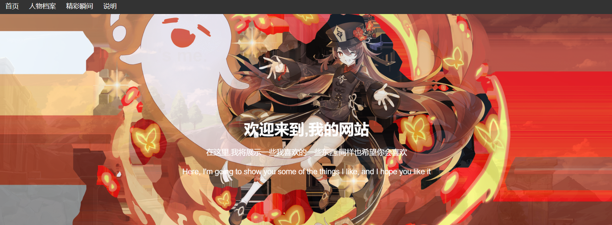
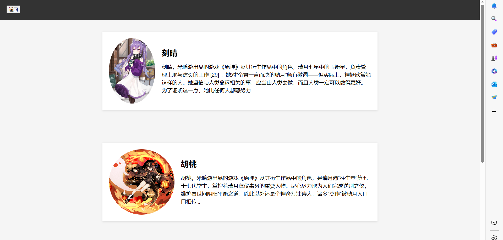
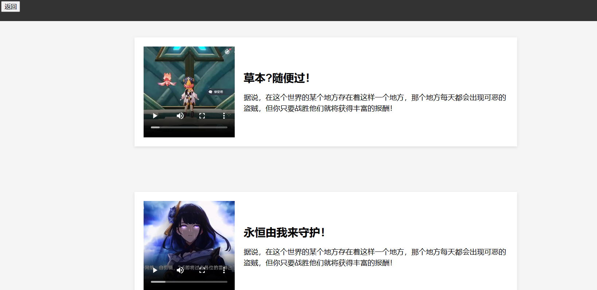

本次 web 结业作业准备构建一个主题为“我的网站”的静态网站，使用 HTML & CSS 的基础上构建一个长页面。
CSS 基本配置：网页的css全部提前写好，放在一个css的文件夹中。
模块介绍：网页一共有 3 个内容模块，分别是: "首页", "人物档案", "精彩瞬间"。
点击菜单，会跳转到相应位置，每个模块基本上有一个按钮，点击后将会展示更多的内容。
首页模块是网站的主页，为了大致展示这个网站的所有的内容。此处使用 img 标签，彰显主题。
创建了一个按钮，此按钮是进行跳转效果，通过 CSS 修饰过后，得到如下：
这个模块有创建了一个按钮，此按钮是进行跳转效果，通过 CSS 修饰过后。同时，点击后，页面将会进行跳转得到如下：
这个模块有创建了一个按钮，此按钮是进行跳转效果，通过 CSS 修饰过后。同时，点击后，页面将会进行跳转得到如下：
主要遇到的问题有：在做样式时标签的位置不太好控制。在做页面背景切换时，遇到麻烦。
1. 标签位置不好控制：通过反复查看，一点一点调位置解决
2. 切被景图不会：通过在网上查资料，在经过自己的反复尝试，最后得以解决。
内容展示不是很好
这个项目中，物品使用spring-boot框架和vue框架。
当项目才完成时，自我感觉还可以，但是当我后面多学了一点vue框架后，感觉不行。
本打算推倒，重做，但是临近期末，时间来不及。最后，成果就如下视频：
此次学习，让我了解了前端三剑客。这三门入门简单，但是真的要做好真的需要花时间。不过，我认为学好这个对我非常有好处。
这次的 web 开发让我受益匪浅，不仅学习了前端，同时更叫让我了解了前后端如何整合在一起。